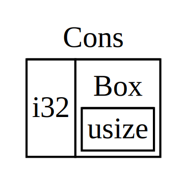

Box<T> Points to Data on the Heap and Has a Known Size
The most straightforward smart pointer is a box, whose type is written
Box<T>. Boxes allow you to store data on the heap rather than the stack. What
remains on the stack is the pointer to the heap data. Refer back to Chapter 4
if you’d like to review the difference between the stack and the heap.
Boxes don’t have performance overhead other than their data being on the heap instead of on the stack, but they don’t have a lot of extra abilities either. They’re most often used in these situations:
- When you have a type whose size can’t be known at compile time, and you want to use a value of that type in a context that needs to know an exact size
- When you have a large amount of data and you want to transfer ownership but ensure the data won’t be copied when you do so
- When you want to own a value and only care that it’s a type that implements a particular trait rather than knowing the concrete type itself
We’re going to demonstrate the first case in the rest of this section. To elaborate on the other two situations a bit more: in the second case, transferring ownership of a large amount of data can take a long time because the data gets copied around on the stack. To improve performance in this situation, we can store the large amount of data on the heap in a box. Then, only the small amount of pointer data is copied around on the stack, and the data stays in one place on the heap. The third case is known as a trait object, and Chapter 17 has an entire section devoted just to that topic. So know that what you learn here will be applied again in Chapter 17!
Using a Box<T> to Store Data on the Heap
Before we get into a use case for Box<T>, let’s get familiar with the syntax
and how to interact with values stored within a Box<T>.
Listing 15-1 shows how to use a box to store an i32 on the heap:
Filename: src/main.rs
fn main() { let b = Box::new(5); println!("b = {}", b); }
Listing 15-1: Storing an i32 value on the heap using a
box
We define the variable b to have the value of a Box that points to the
value 5, which is allocated on the heap. This program will print b = 5; in
this case, we can access the data in the box in a similar way as we would if
this data was on the stack. Just like any value that has ownership of data,
when a box goes out of scope like b does at the end of main, it will be
deallocated. The deallocation happens for both the box (stored on the stack)
and the data it points to (stored on the heap).
Putting a single value on the heap isn’t very useful, so you won’t use boxes by
themselves in the way that Listing 15-1 does very often. Having values like a
single i32 on the stack, where they’re stored by default is more appropriate
in the majority of cases. Let’s get into a case where boxes allow us to define
types that we wouldn’t be allowed to if we didn’t have boxes.
Boxes Enable Recursive Types
Rust needs to know at compile time how much space a type takes up. One kind of type whose size can’t be known at compile time is a recursive type where a value can have as part of itself another value of the same type. This nesting of values could theoretically continue infinitely, so Rust doesn’t know how much space a value of a recursive type needs. Boxes have a known size, however, so by inserting a box in a recursive type definition, we are allowed to have recursive types.
Let’s explore the cons list, a data type common in functional programming languages, to illustrate this concept. The cons list type we’re going to define is straightforward except for the recursion, so the concepts in this example will be useful any time you get into more complex situations involving recursive types.
A cons list is a list where each item in the list contains two things: the
value of the current item and the next item. The last item in the list contains
only a value called Nil without a next item.
More Information About the Cons List
A cons list is a data structure that comes from the Lisp programming language and its dialects. In Lisp, the
consfunction (short for “construct function”) constructs a new list from its two arguments, which usually are a single value and another list.The cons function concept has made its way into more general functional programming jargon; “to cons x onto y” informally means to construct a new container instance by putting the element x at the start of this new container, followed by the container y.
A cons list is produced by recursively calling the
consfunction. The canonical name to denote the base case of the recursion isNil, which announces the end of the list. Note that this is not the same as the “null” or “nil” concept from Chapter 6, which is an invalid or absent value.
Note that while functional programming languages use cons lists frequently,
this isn’t a commonly used data structure in Rust. Most of the time when you
have a list of items in Rust, Vec<T> is a better choice. Other, more complex
recursive data types are useful in various situations in Rust, but by
starting with the cons list, we can explore how boxes let us define a recursive
data type without much distraction.
Listing 15-2 contains an enum definition for a cons list. Note that this won’t compile quite yet because this is type doesn’t have a known size, which we’ll demonstrate:
Filename: src/main.rs
enum List {
Cons(i32, List),
Nil,
}
Listing 15-2: The first attempt of defining an enum to
represent a cons list data structure of i32 values
Note: We’re choosing to implement a cons list that only holds
i32values for the purposes of this example. We could have implemented it using generics, as we discussed in Chapter 10, in order to define a cons list type that could store values of any type.
Using our cons list type to store the list 1, 2, 3 would look like the code
in Listing 15-3:
Filename: src/main.rs
use List::{Cons, Nil};
fn main() {
let list = Cons(1, Cons(2, Cons(3, Nil)));
}
Listing 15-3: Using the List enum to store the list 1, 2, 3
The first Cons value holds 1 and another List value. This List
value is another Cons value that holds 2 and another List value. This
is one more Cons value that holds 3 and a List value, which is finally
Nil, the non-recursive variant that signals the end of the list.
If we try to compile the above code, we get the error shown in Listing 15-4:
error[E0072]: recursive type `List` has infinite size
-->
|
1 | enum List {
| ^^^^^^^^^ recursive type has infinite size
2 | Cons(i32, List),
| --------------- recursive without indirection
|
= help: insert indirection (e.g., a `Box`, `Rc`, or `&`) at some point to
make `List` representable
Listing 15-4: The error we get when attempting to define a recursive enum
The error says this type ‘has infinite size’. The reason is the way we’ve
defined List is with a variant that is recursive: it holds another value of
itself directly. This means Rust can’t figure out how much space it needs in
order to store a List value. Let’s break this down a bit: first let’s look at
how Rust decides how much space it needs to store a value of a non-recursive
type.
Computing the Size of a Non-Recursive Type
Recall the Message enum we defined in Listing 6-2 when we discussed enum
definitions in Chapter 6:
# #![allow(unused_variables)] #fn main() { enum Message { Quit, Move { x: i32, y: i32 }, Write(String), ChangeColor(i32, i32, i32), } #}
To determine how much space to allocate for a Message value, Rust goes
through each of the variants to see which variant needs the most space. Rust
sees that Message::Quit doesn’t need any space, Message::Move needs enough
space to store two i32 values, and so forth. Since only one variant will end
up being used, the most space a Message value will need is the space it would
take to store the largest of its variants.
Contrast this to what happens when Rust tries to determine how much space a
recursive type like the List enum in Listing 15-2 needs. The compiler starts
by looking at the Cons variant, which holds a value of type i32 and a value
of type List. Therefore, Cons needs an amount of space equal to the size of
an i32 plus the size of a List. To figure out how much memory the List
type needs, the compiler looks at the variants, starting with the Cons
variant. The Cons variant holds a value of type i32 and a value of type
List, and this continues infinitely, as shown in Figure 15-5.

Figure 15-5: An infinite List consisting of infinite
Cons variants
Using Box<T> to Get a Recursive Type with a Known Size
Rust can’t figure out how much space to allocate for recursively defined types, so the compiler gives the error in Listing 15-4. The error does include this helpful suggestion:
= help: insert indirection (e.g., a `Box`, `Rc`, or `&`) at some point to
make `List` representable
In this suggestion, “indirection” means that instead of storing a value directly, we’re going to store the value indirectly by storing a pointer to the value instead.
Because a Box<T> is a pointer, Rust always knows how much space a Box<T>
needs: a pointer’s size doesn’t change based on the amount of data it’s
pointing to.
So we can put a Box inside the Cons variant instead of another List value
directly. The Box will point to the next List value that will be on the
heap, rather than inside the Cons variant. Conceptually, we still have a list
created by lists “holding” other lists, but the way this concept is implemented
is now more like the items being next to one another rather than inside one
another.
We can change the definition of the List enum from Listing 15-2 and the usage
of the List from Listing 15-3 to the code in Listing 15-6, which will compile:
Filename: src/main.rs
enum List { Cons(i32, Box<List>), Nil, } use List::{Cons, Nil}; fn main() { let list = Cons(1, Box::new(Cons(2, Box::new(Cons(3, Box::new(Nil)))))); }
Listing 15-6: Definition of List that uses Box<T> in
order to have a known size
The Cons variant will need the size of an i32 plus the space to store the
box’s pointer data. The Nil variant stores no values, so it needs less space
than the Cons variant. We now know that any List value will take up the
size of an i32 plus the size of a box’s pointer data. By using a box, we’ve
broken the infinite, recursive chain so the compiler is able to figure out the
size it needs to store a List value. Figure 15-7 shows what the Cons
variant looks like now:

Figure 15-7: A List that is not infinitely sized since
Cons holds a Box
Boxes only provide the indirection and heap allocation; they don’t have any other special abilities like those we’ll see with the other smart pointer types. They also don’t have any performance overhead that these special abilities incur, so they can be useful in cases like the cons list where the indirection is the only feature we need. We’ll look at more use cases for boxes in Chapter 17, too.
The Box<T> type is a smart pointer because it implements the Deref trait,
which allows Box<T> values to be treated like references. When a Box<T>
value goes out of scope, the heap data that the box is pointing to is cleaned
up as well because of the Box<T> type’s Drop trait implementation. Let’s
explore these two types in more detail; these traits are going to be even more
important to the functionality provided by the other smart pointer types we’ll
be discussing in the rest of this chapter.